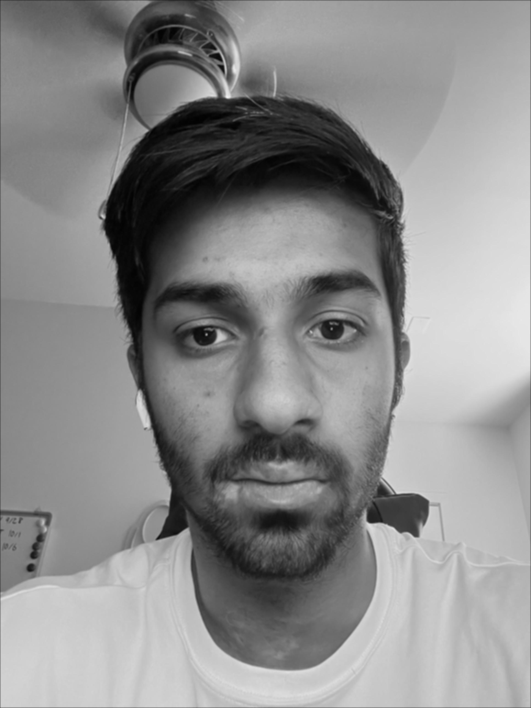
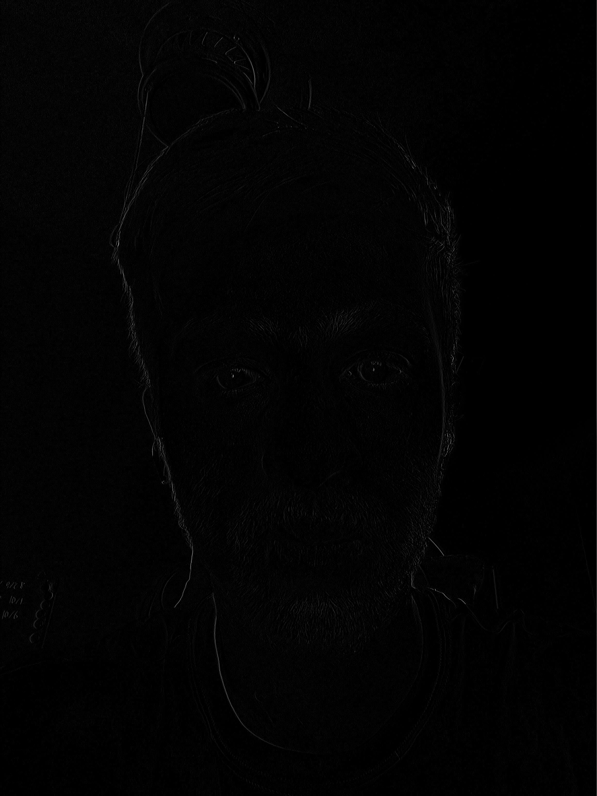
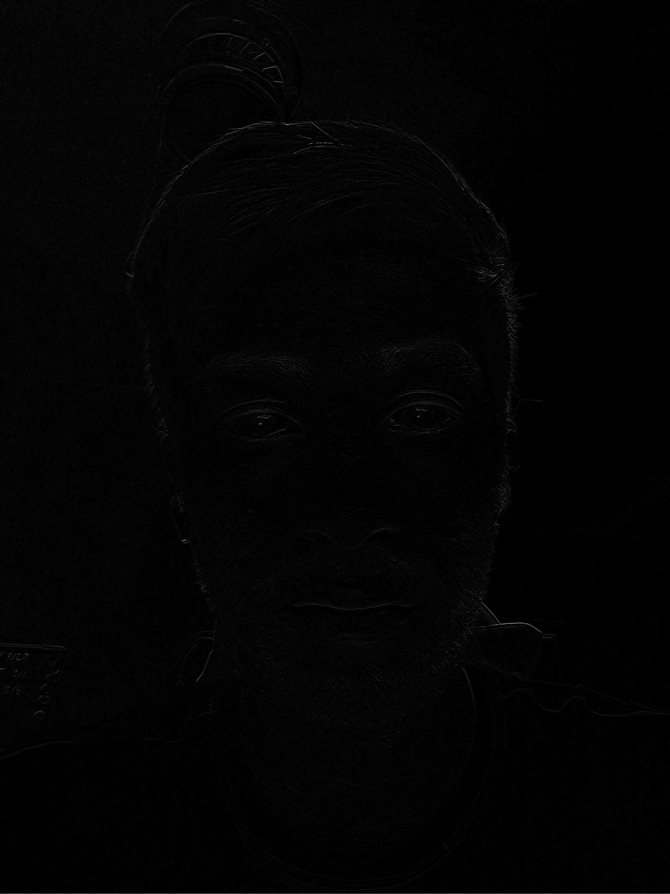
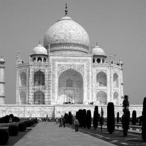

Project 2: Fun with Filters, Frequencies & Blending
Exploring convolutions, edge detection, frequencies, and multi-resolution blending.
Part 1: Fun with Filters
1.1 Convolutions from Scratch
Implemented convolution manually with loops, compared to scipy.signal.convolve2d. Also tested with a 9×9 box filter and finite difference operators.
# Placeholder code snippet: manual convolution


1.2 Finite Difference Operator
Edges on the cameraman image using finite differences, gradient magnitude, and thresholding.
# Placeholder code: finite difference + gradient magnitude


1.3 Derivative of Gaussian (DoG)
Smoothed with Gaussian, computed DoG filters and compared to finite difference results.
# Placeholder code: Gaussian smoothing & DoG filters


Part 2: Fun with Frequencies
2.1 Image Sharpening
Implemented unsharp masking. Tested on blurry & sharp images.
# Placeholder code: unsharp masking filter


2.2 Hybrid Images
Created hybrids by combining low frequencies of one image with high frequencies of another.
# Placeholder code: hybrid image creation


Part 2.3: Gaussian and Laplacian Stacks
Built Gaussian & Laplacian stacks. Visualized Oraple (orange+apple) as in textbook Figure 3.42.


Part 2.4: Multiresolution Blending (Oraple & Beyond)
Vertical/Horizontal Seam (Oraple)


Irregular Mask Blends
Examples with creative blends (e.g., nature + urban, surreal hybrids).


Laplacian Stack Visualization for Favorite Blend